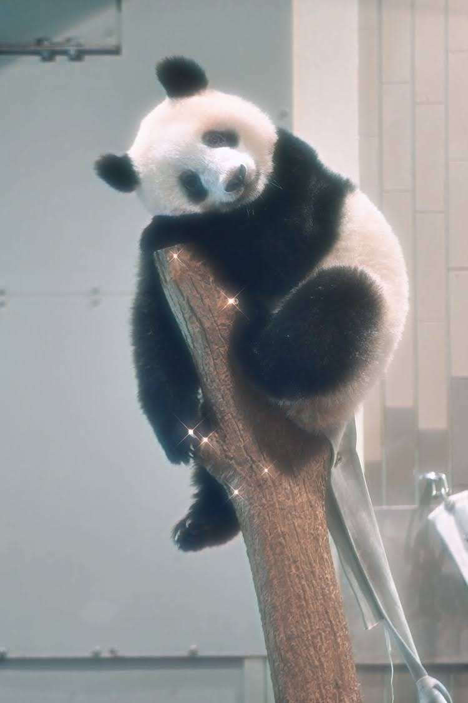
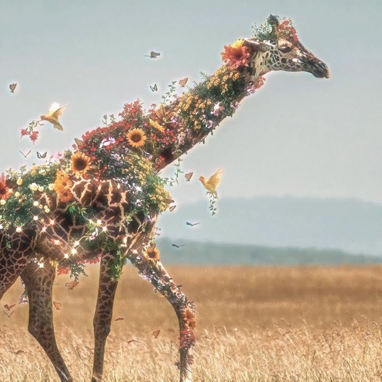
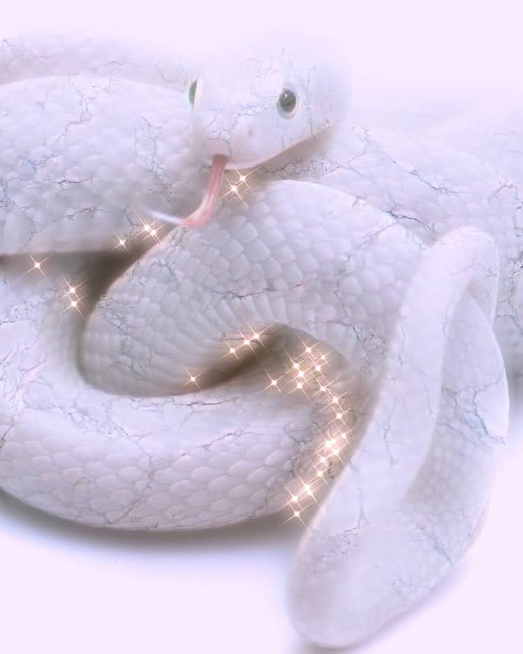

Велика панда живе в листяних та хвойних лісах із густим бамбуковим підліском в гористих
місцевостях центрального Китаю, таких як Сичуань і Тибет, на висоті від 1200 до 4000 м над
рівнем моря. Зливи та густі тумани протягом усього року властиві цим лісам, що часто повиті
густими хмарами. Панди вимирають через те, що бамбукові ліси, де вони живуть, масово вирубують і
тваринам немає де жити.
Загальна площа їхнього ареалу близько 30 000 км², проте існує думка, що панди живуть на ділянці,
що становить не більше 6 000 км². У рідних лісах кожна панда визначає свою територію, помічаючи
крайні дерева за допомогою виділень із пахучих залоз. Іноді ці території частково накладаються
на чужі межі, проте тварини звичайно уникають одне одного, живучи поодинці.
Китайська назва панди — «ведмідь-кіт» і означає те саме якщо прочитати її в зворотньому
напрямку. На заході свою назву «панда» звір отримав через віддалену схожість із малою пандою,
також вона була знана під назвою «плямистий ведмідь» (Ailuropus melanoleucus). Ближче до кінця
20-го століття панда стала своєрідним символом Китаю, та її зображення використовується на
китайських золотих монетах. Вчені не мають точних даних, скільки панди живуть в дикій природі,
але, без сумніву, менше ніж у неволі. Китайські вчені повідомляли, що панди в неволі доживали до
віку 35 років.

Самці сягають висоти 5,5 метра, маса — до 900 кг. Самиці, зазвичай, трохи нижчі та легші. Шия в
жираф надзвичайно довга, попри те що вони, як і більшість ссавців, мають лише 7 шийних хребців.
Ця обставина збільшує навантаження на систему кровообігу, особливо щодо постачання кров'ю
головного мозку. Тому серце жираф особливо сильне. Воно перекачує близько 60 літрів крові
щохвилини, має масу 12 кг і створює тиск, утричі вищий, ніж у людини. Але воно не здатне
перенести навантаження, пов'язане із різким підійманням чи опусканням голови. Щоб такі рухи не
спричиняли смерть тварини, кров жирафи має вдвічі більше кров'яних тілець, ніж у людини, і
значно густіша. Малюнок на тілі складається з темних плям, розташованих на базовій світлій
поверхні. У кожної жирафи такий малюнок індивідуальний, аналогічно до відбитків пальців людини.
Нижня частина тіла жираф світліша та без плям. На голові в жираф — як самців, так і самиць — є
два обтягнуті шерстю ріжки із потовщенням на кінцях. Часом трапляються й дві пари ріжків. На
чолі нерідко є своєрідний кістковий наріст, який помилково можна прийняти за ще один (непарний)
ріг. Очі чорні, вуха короткі. Жирафи мають досить добрий зір, слух і нюх. Це дає їм змогу
завчасно помічати небезпеку. Добре контролювати місцевість допомагає, звичайно ж, і високий
зріст. Своїх довгих родичів жирафи здатні помічати на відстані до кілометра. Побутує хибна
думка, що жирафи не мають голосу. Насправді вони спілкуються між собою на частотах, нижчих від
20 Герц.

Викопні змії відомі з початку крейдового періоду. Походять, судячи за все, від вараноподібних
плазунів. Втрата кінцівок, можливо, пов'язана з пристосуванням до життя серед густих кущів та
каміння. Пересуваються за рахунок бокових вигинів та зміни нахилу дуже рухомих ребер. Давні змії
були великих розмірів (довжиною до 15 м), нині найбільша змія – сітчастий пітон або анаконда,
рекордні зразки яких досягають близько 12 м, в той же час багато видів мають довжину лише 8 – 10
см та декілька міліметрів товщини. Кількість хребців, як правило, більше 200, у деяких викопних
змій досягала 435. У отруйних змій у верхній щелепі розташовані отруйні зуби, які мають канал
для стоку отрути, що виробляється видозміненими слинними залозами. Отрута виділяється під час
укусу внаслідок скорочення скроневих м'язів, що стискають залозу. Права та ліва частина щелеп
з'єднана гнучкою зв'язкою. Тулубні та хвостові відділи хребта не відрізняються, залишки тазу та
задніх кінцівок залишились тільки в удавів. Внутрішні органи асиметричні, одна з легень менш
розвинута або відсутня. Задній край розвиненої легені перетворився на резервуар для запасу
повітря. Печінка, нирки, статеві залози дуже видовжені. Сечовий міхур відсутній.